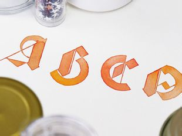

API Unit Test Scrollbar (滚动条)
【创建】默认配置
【必要条件】需要容器有且只有唯一子元素，子元素内部无任何限制。
控件会创建一间隔为 500ms 的定时器，以捕获容器、唯一子元素的高度变化，所以在删除容器前最好调用实例的 destroy 方法避免多余的性能开销

【创建】自定义样式
传入参数 option.scrollbarNodeStyle 改变滑动按钮样式
传入参数 option.scrollbarNodeHoverStyle 改变滑动按钮hover, 滑动中的样式
以上两个属性为满足 css 定义规范的对象，默认配置参考 api 文档；
与默认参数的关系为完全覆盖，既定义后默认样式完全不会产生效果
【创建】自动隐藏滚动条
option.autoHide = true 开启自动隐藏功能; 滚动条会在鼠标离开容器 3000ms 后隐藏
【警告】开启此功能后可能会使使用者无法判断容器内部是否有更多内容，慎用